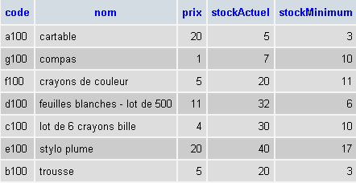
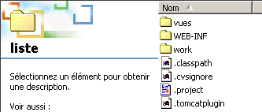
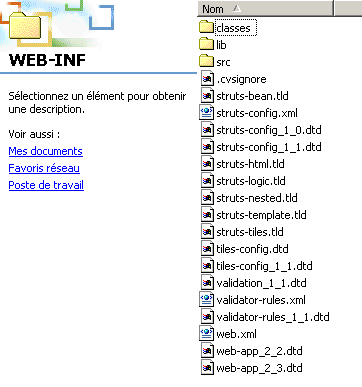
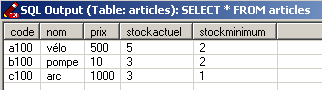
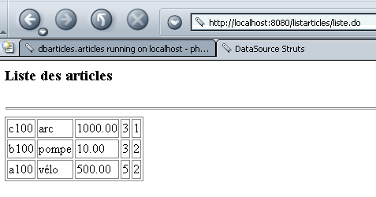

9. Nutzung einer Datenquelle
Wir möchten hier die Grundlagen für die Nutzung von Datenbanken innerhalb einer Struts-Anwendung legen.
9.1. Die Struts-Anwendung /listarticles
Wir möchten den Inhalt einer Tabelle anzeigen, in der die Merkmale der von einem Geschäft verkauften Artikel gespeichert sind.
 |
|
Der Inhalt der Tabelle lautet wie folgt:

Die Anwendung „listarticles“ liefert uns dasselbe (wenn auch in weniger ansprechender Form) auf einer Webseite:

9.2. Konfiguration der Struts-Anwendung /listarticles
Die Datei „web.xml“ der Anwendung ist standardmäßig wie folgt aufgebaut:
web.xml
<?xml version="1.0" encoding="ISO-8859-1"?>
<!DOCTYPE web-app
PUBLIC "-//Sun Microsystems, Inc.//DTD Web Application 2.3//EN"
"http://java.sun.com/dtd/web-app_2_3.dtd">
<web-app>
<servlet>
<servlet-name>action</servlet-name>
<servlet-class>org.apache.struts.action.ActionServlet</servlet-class>
<init-param>
<param-name>config</param-name>
<param-value>/WEB-INF/struts-config.xml</param-value>
</init-param>
<load-on-startup>1</load-on-startup>
</servlet>
<servlet-mapping>
<servlet-name>action</servlet-name>
<url-pattern>*.do</url-pattern>
</servlet-mapping>
<taglib>
<taglib-uri>/WEB-INF/struts-bean.tld</taglib-uri>
<taglib-location>/WEB-INF/struts-bean.tld</taglib-location>
</taglib>
<taglib>
<taglib-uri>/WEB-INF/struts-logic.tld</taglib-uri>
<taglib-location>/WEB-INF/struts-logic.tld</taglib-location>
</taglib>
</web-app>
Die Datei struts-config.xml führt einen neuen Abschnitt <data-sources> ein, mit dem Datenquellen deklariert und konfiguriert werden können:
struts-config.xml
<?xml version="1.0" encoding="ISO-8859-1" ?>
<!DOCTYPE struts-config PUBLIC
"-//Apache Software Foundation//DTD Struts Configuration 1.1//EN"
"http://jakarta.apache.org/struts/dtds/struts-config_1_1.dtd">
<struts-config>
<data-sources>
<data-source key="dbarticles">
<set-property property="driverClass" value="com.mysql.jdbc.Driver"></set-property>
<set-property property="url" value="jdbc:mysql://localhost/dbarticles"></set-property>
<set-property property="user" value="admarticles"></set-property>
<set-property property="password" value="mdparticles"></set-property>
<set-property property="minCount" value="2"></set-property>
<set-property property="maxCount" value="5"></set-property>
</data-source>
</data-sources>
<action-mappings>
<action path="/liste" type="istia.st.struts.articles.ListeArticlesAction">
<forward name="afficherListeArticles" path="/vues/listarticles.jsp"/>
<forward name="afficherErreurs" path="/vues/erreurs.jsp"/>
</action>
</action-mappings>
<message-resources parameter="istia.st.struts.articles.ApplicationResources"
null="false" />
</struts-config>
9.2.1. Datenquellen
Im Abschnitt <data-sources> werden alle Datenquellen der Anwendung deklariert, wobei jede einzelne durch einen <data-source>-Abschnitt beschrieben wird. Dieses Tag unterstützt mehrere Attribute:
identifiziert die Datenquelle, wenn mehrere vorhanden sind. | |
der Name der Klasse, die instanziiert werden muss, um Zugriff auf die Datenbank zu erhalten. Diese Klasse befindet sich in der Regel in einer vom Herausgeber des SGBD bereitgestellten Klassenbibliothek (.jar). Diese Bibliothek enthält den Treiber JDBC für den Datenbankzugriff. Die Eigenschaft driverClass bezeichnet diesen Treiber. Die .jar-Datei mit den Klassen für den Zugriff auf SGBD wird im Ordner WEB-INF/lib der Anwendung abgelegt. | |
Verbindungszeichenfolge zu einer bestimmten Datenbank. Der Treiber JDBC ermöglicht nämlich den Zugriff auf alle von SGBD verwalteten Datenbanken. Mit der Eigenschaft „url“ können wir angeben, welche davon wir nutzen möchten. | |
Der Zugriff auf die Datenbanken ist geschützt. Der SGBD verwaltet Benutzer, die durch einen Benutzernamen und ein Passwort identifiziert werden. Diese werden in den Attributen „user“ und „password“ des Tags angegeben. | |
Struts verwaltet einen Verbindungspool zum SGBD. Das Herstellen einer Verbindung zu einem SGBD ist ein ressourcenintensiver Vorgang, der viel Zeit und Speicherplatz beansprucht. Anstatt für jede Anfrage, die an die Anwendung gestellt wird, eine Verbindung zu SGBD zu öffnen und wieder zu schließen, verwaltet die Anwendung einen Pool von n Verbindungen, wobei n im Bereich von [minCount, maxCount] liegt. Wenn die Anwendung bei einer Anfrage eine Verbindung benötigt: - versucht sie, eine aus dem Verbindungspool zu beziehen. Findet sie eine freie Verbindung, nutzt sie diese. - Wenn keine freien Verbindungen im Pool vorhanden sind und die Anzahl der Verbindungen im Pool unter maxCount liegt, wird eine neue Verbindung geöffnet und in den Pool aufgenommen. Die aktuelle Anfrage kann diese dann nutzen. - Wenn keine freien Verbindungen vorhanden sind und keine neue Verbindung hergestellt werden kann, wird die Abfrage in die Warteschlange gestellt. Wenn die aktuelle Abfrage die Verbindung schließt, wird diese nicht tatsächlich geschlossen, sondern an den Pool zurückgegeben. |
Hier haben wir folgende Eigenschaften:
dbarticles – dies ist der Name, unter dem die Datenquelle im Anwendungskontext bekannt sein wird | |
com.mysql.jdbc.Driver. Wir verwenden eine Datenbank namens MySQL. | |
jdbc:mysql://localhost/dbarticles. Die Datenbank heißt dbarticles und befindet sich auf dem lokalen Rechner. | |
admarticles, mdparticles. Diesem Benutzer wurden alle Berechtigungen für die Datenbank „dbarticles“ zugewiesen. | |
2, 5. Mindestens 2 Verbindungen im Pool, maximal 5. |
9.2.2. Aktionen
Die in der Struts-Konfigurationsdatei deklarierten Aktionen sind folgende:
<action-mappings>
<action path="/liste" type="istia.st.struts.articles.ListeArticlesAction">
<forward name="afficherListeArticles" path="/vues/listarticles.jsp"/>
<forward name="afficherErreurs" path="/vues/erreurs.jsp"/>
</action>
</action-mappings>
Die einzige Aktion heißt /liste und ist der Klasse istia.st.struts.articles.ListeArticlesAction zugeordnet. Diese Aktion endet entweder mit der Anzeige:
- der Artikelseite (/vues/listarticles.jsp)
- der Fehlerseite (/vues/erreurs.jsp)
9.2.3. Die Meldungsdatei
Die Meldungsdatei ApplicationResources.properties wird im Ordner WEB-INF/classes/istia/st/struts/articles abgelegt. Ihr Inhalt lautet wie folgt:
# Fehler
errors.header=<ul>
errors.footer=</ul>
erreur.dbarticles=<li>Erreur d'accès à la base des articles ({0})</li>
Es kann nur ein einziger Fehler auftreten, nämlich ein Fehler beim Zugriff auf die Datenbank. Tatsächlich gibt es mehrere mögliche Fehlerarten, die alle in derselben Fehlermeldung zusammengefasst sind. Die genaue Ursache des Fehlers wird jedoch im Parameter {0} angegeben.
9.3. Die Ansichten
9.3.1. Die Ansicht erreurs.jsp
Diese Ansicht soll eine Fehlerliste anzeigen. Wir sind ihr bereits mehrfach begegnet.
<%@ taglib uri="/WEB-INF/struts-html.tld" prefix="html" %>
<html>
<head>
<title>Liste d'articles - erreurs</title>
</head>
<body>
<h2>Les erreurs suivantes se sont produites</h2>
<html:errors/>
</body>
</html>
Diese Ansicht zeigt lediglich die Liste der Fehler mit dem Tag <html:errors/> an.
9.3.2. Die Ansicht listarticles.jsp
Diese Ansicht soll den Inhalt der Tabelle ARTICLES aus der Datenbank anzeigen. Ihr Code lautet wie folgt:
<%@ taglib uri="/WEB-INF/struts-bean.tld" prefix="bean" %>
<%@ taglib uri="/WEB-INF/struts-logic.tld" prefix="logic" %>
<%
// listarticles: ArrayList in der Abfrage
// listArticles(i): Array (String[5]) mit 5 Elementen
%>
<html>
<head>
<title>DataSource Struts</title>
</head>
<body>
<h3>Liste des articles</h3>
<hr>
<table border="1">
<logic:iterate id="ligne" name="listArticles">
<tr>
<logic:iterate id="colonne" name="ligne">
<td><bean:write name="colonne"/></td>
</logic:iterate>
</tr>
</logic:iterate>
</table>
</body>
</html>
Die Aktion /liste überträgt den Inhalt der Tabelle ARTICLES in ein Objekt ArrayList, das in der Abfrage unter dem Namen listArticles abgelegt ist. Jedes Element des Objekts listArticles ist ein Array aus 5 Zeichenfolgen, die die 5 Informationen (Code, Name, Preis, stockActuel, stockMinimum) darstellen, die zu einem Artikel in der Tabelle gehören. Die Ansicht soll den Inhalt des Objekts listArticles in einer Tabelle HTML anzeigen. Dazu verwendet sie das Tag <logic:iterate>:
<logic:iterate id="ligne" name="listArticles">
<tr>
<logic:iterate id="colonne" name="ligne">
<td><bean:write name="colonne"/></td>
</logic:iterate>
</tr>
</logic:iterate>
Hier gibt es zwei Iterationen. Die erste durchläuft die Elemente des Objekts ArrayList listArticles. Das aktuelle Element von listArticles wird hier als „Zeile“ bezeichnet. Das Element „Zeile“ stellt ein String-Objekt [5] dar, das mithilfe der zweiten Iteration durchlaufen wird. Das Element dieser zweiten Iteration wird als „Spalte“ bezeichnet. Es stellt das aktuelle Element eines Arrays von Zeichenfolgen dar und ist somit eine Zeichenfolge (Code, Name, Preis, stockActuel, stockMinimum). Sein Wert wird mithilfe des Tags <bean:write> angezeigt.
Die Ansicht verwendet Tags aus den Bibliotheken „struts-logic“ und „struts-bean“. Daher muss deren Verwendung deklariert werden:
<%@ taglib uri="/WEB-INF/struts-bean.tld" prefix="bean" %>
<%@ taglib uri="/WEB-INF/struts-logic.tld" prefix="logic" %>
9.4. Die Aktion /liste
Die Aktion /liste dient dazu, ein Objekt ArrayList, das den Inhalt der Tabelle ARTICLES darstellt, in die Anfrage einzufügen, damit eine Ansicht darauf zugreifen kann. Der Code lautet wie folgt:
package istia.st.struts.articles;
import java.io.IOException;
import java.sql.Connection;
import java.sql.ResultSet;
import java.sql.Statement;
import java.util.ArrayList;
import javax.servlet.ServletException;
import javax.servlet.http.HttpServletRequest;
import javax.servlet.http.HttpServletResponse;
import javax.sql.DataSource;
import org.apache.struts.action.Action;
import org.apache.struts.action.ActionError;
import org.apache.struts.action.ActionErrors;
import org.apache.struts.action.ActionForm;
import org.apache.struts.action.ActionForward;
import org.apache.struts.action.ActionMapping;
public class ListeArticlesAction extends Action {
public ActionForward execute(
ActionMapping mapping,
ActionForm form,
HttpServletRequest request,
HttpServletResponse response)
throws IOException, ServletException {
// liest den Inhalt der Artikeltabelle einer Verbindung
//, die bei der Initialisierung des Kontexts hergestellt wurde
// Die Datenquelle „dbarticles“ wird abgerufen
DataSource dataSource = this.getDataSource(request, "dbarticles");
if (dataSource == null) {
// Die Datenquelle konnte nicht angelegt werden
ActionErrors erreurs = new ActionErrors();
erreurs.add( "dbarticles",new ActionError("erreur.dbarticles","La source de données n'a pu être créée"));
this.saveErrors(request, erreurs);
return mapping.findForward("afficherErreurs");
}
// Hier existiert die Datenquelle – sie wird gen utzt Connection connection = null;
Statement st = null;
ResultSet rs = null;
String requête = null;
ArrayList alArticles = new ArrayList();
// Fehler werden behandelt
try {
// Verbindung herstellen
connexion = dataSource.getConnection();
// Abfrage vorbereiten SQL
requête =
"select code, nom, prix, stockActuel, stockMinimum from articles order by nom";
// die Abfrage ausführen
st = connexion.createStatement();
rs = st.executeQuery(requête);
// Ergebnisse auswerten
while (rs.next()) {
// die aktuelle Zeile speichern
alArticles.add(
new String[] {
rs.getString("code"),
rs.getString("nom"),
rs.getString("prix"),
rs.getString("stockactuel"),
rs.getString("stockMinimum")});
// nächste Zeile
} //while
// Ressourcen freigeben
rs.close();
st.close();
connexion.close();
} catch (Exception ex) {
// Es sind Fehler aufgetreten
ActionErrors erreurs = new ActionErrors();
erreurs.add("dbarticles",new ActionError("erreur.dbarticles", ex.getMessage()));
this.saveErrors(request, erreurs);
return mapping.findForward("afficherErreurs");
}
// Alles in Ordnung
request.setAttribute("listArticles", alArticles);
return mapping.findForward("afficherListeArticles");
} //ausführen
} //Klasse
Der Leser ist sicherlich in der Lage, den Kern des obigen Codes zu verstehen. Wir werden uns nur auf die einzige Neuerung konzentrieren, nämlich die Verwendung eines Objekts DataSource, das vom Struts-Framework bereitgestellt wird. Dieses Objekt DataSource repräsentiert den Verbindungspool, der durch den Abschnitt <data-source key="dbarticles"> in der Konfigurationsdatei konfiguriert wurde. Das Objekt DataSource wurde nach seiner Erstellung in den Anwendungskontext eingefügt, damit alle Objekte dieses Kontexts darauf zugreifen können. Es wird daher wie folgt abgerufen:
// Die Datenquelle „dbarticles“ wird abgerufen
DataSource dataSource = this.getDataSource(request, "dbarticles");
Wir fragen hier die durch den Schlüssel „dbarticles“ identifizierte Datenquelle ab. Wenn wir einen Zeiger null erhalten, bedeutet dies, dass die Datenquelle bei der Initialisierung der Anwendung nicht angelegt werden konnte. In diesem Fall protokollieren wir den Fehler in einem Objekt ActionErrors und leiten die Steuerung an die Fehlerseite weiter, die in der Konfigurationsdatei durch den Schlüssel „afficherErreurs“ identifiziert wird:
<action path="/liste" type="istia.st.struts.articles.ListeArticlesAction">
<forward name="afficherListeArticles" path="/vues/listarticles.jsp"/>
<forward name="afficherErreurs" path="/vues/erreurs.jsp"/>
</action>
</action-mappings>
Sobald die Datenquelle bereitgestellt ist, haben wir Zugriff auf den Verbindungspool. Eine Verbindung zur Datenbank wird mit folgendem Code hergestellt:
Hier stellt uns der Pool eine wiederverwendete Verbindung zur Verfügung oder erstellt eine neue, sofern noch Kapazitäten dafür vorhanden sind.
9.5. Bereitstellung
Der Anwendungskontext wird in der Tomcat-Konfigurationsdatei server.xml definiert:
<Context path="/listarticles" reloadable="true" docBase="E:\data\serge\web\struts\articles\liste" />
Die Verzeichnisstruktur der Anwendung sieht wie folgt aus:
  | ||
  | ||
 | ||
Beachten Sie die Bibliothek mysql-connector-java-3.0.10-stable-bin.jar in WEB-INF/lib. Diese enthält den Treiber JDBC der hier verwendeten Basis MySQL.
9.6. Die Tests
Wir starten Tomcat und rufen die URL-http://localhost:8080/listarticles/liste.do auf:

9.7. Eine zweite Datenquelle
Wir verwenden nun eine zweite Datenquelle, die sich in einer Postgres-Datenbank befindet. Auch hier befinden sich die Daten in einer Tabelle mit dem Namen ARTICLES, die dieselben Spalten wie zuvor enthält. Ihr Inhalt lautet wie folgt:

Diese neue Datenquelle wird in der Struts-Konfigurationsdatei deklariert:
<data-sources>
<data-source key="dbarticles" >
<set-property property="driverClass" value="com.mysql.jdbc.Driver"></set-property>
<set-property property="url" value="jdbc:mysql://localhost/dbarticles"></set-property>
<set-property property="user" value="admarticles"></set-property>
<set-property property="password" value="mdparticles"></set-property>
<set-property property="minCount" value="2"></set-property>
<set-property property="maxCount" value="5"></set-property>
</data-source>
<data-source key="pgdbarticles" type="org.apache.commons.dbcp.BasicDataSource">
<set-property property="driverClassName" value="org.postgresql.Driver" />
<set-property property="url" value="jdbc:postgresql://localhost/dbarticles" />
<set-property property="username" value="serge" />
<set-property property="password" value="serge" />
<set-property property="maxActive" value="10" />
<set-property property="maxWait" value="5000" />
<set-property property="defaultAutoCommit" value="false" />
<set-property property="defaultReadOnly" value="false" />
</data-source>
</data-sources>
Die neue Quelle erhält den Bezeichner (Key) „pgdbarticles“. Die Neuerung stammt aus der Klasse, die die Schnittstelle „javax.sql.DataSource“ implementiert. Die Standardklasse ist „org.apache.struts.util.GenericDataSource“, die in der Bibliothek „struts.jar“ definiert ist. Diese Klasse wird in zukünftigen Versionen von Struts nicht mehr unterstützt, und für die Version 1.1 wird empfohlen, die Klasse org.apache.commons.dbcp.BasicDataSource zu verwenden, die sich in der Bibliothek commons-dbcp-1.1.jar befindet. Diese ist nicht unbedingt im Struts-Paket enthalten. Sie ist unter der URL http://jakarta.apache.org/commons/index.html und insbesondere unter der URL http://jakarta.apache.org/site/binindex.cgi zu finden. Man muss das Produkt mit dem Namen „Commons DBCP“ herunterladen. Unter Windows kann man die ZIP-Datei herunterladen. Diese enthält den Quellcode der Bibliothek sowie die entsprechende JAR-Datei. Diese muss aus dem ZIP-Archiv extrahiert und im Ordner „WEB-INF/lib“ der Anwendung abgelegt werden. Außerdem muss der Treiber des verwendeten SGBD in denselben Ordner kopiert werden:

Um diesen Quellcode zu verwenden, ändern wir eine Anweisung im Code der Aktion /liste:
Diesmal fragen wir die Datenquelle mit dem Namen pgdbarticles, c.a.d, die Postgres-Datenquelle ab.
Jetzt müssen wir nur noch alles kompilieren, Tomcat starten und die Seite „http://localhost:8080/listarticles/liste.do“ unter der Adresse URL aufrufen:

9.8. Fazit
Wir haben gezeigt, wie man einen Verbindungspool für den Zugriff auf eine Datenbank nutzt. Dabei ist anzumerken, dass wir die Architektur MVC nicht eingehalten haben. Tatsächlich führt die Aktion /liste selbst die Abfragen SQL durch, um auf die Daten zuzugreifen. Es wäre besser gewesen, wenn sie sich an eine zwischengeschaltete Geschäftsklasse gewandt hätte, die die Tatsache verbergen würde, dass die Daten aus einem SGBD abgerufen werden. Wahrscheinlich würde dann die Fachklasse den Verbindungspool erstellen, und es wäre nicht notwendig, diesen in der Struts-Konfigurationsdatei zu deklarieren. Das ist ein Hinweis: Das Vorhandensein eines <data-sources>-Abschnitts in der Konfigurationsdatei kann bedeuten, dass unsere Anwendung die Architektur MVC nicht einhält.